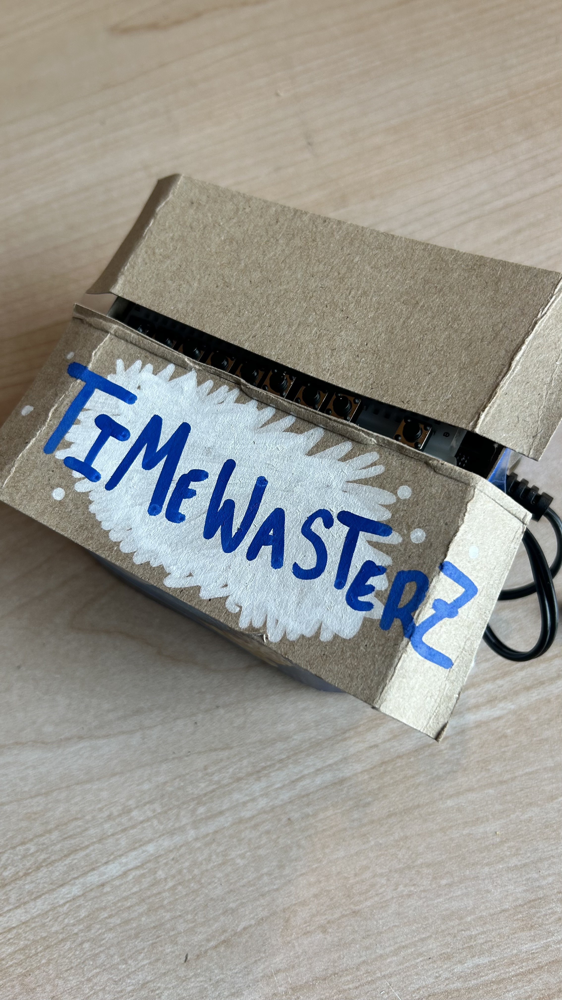
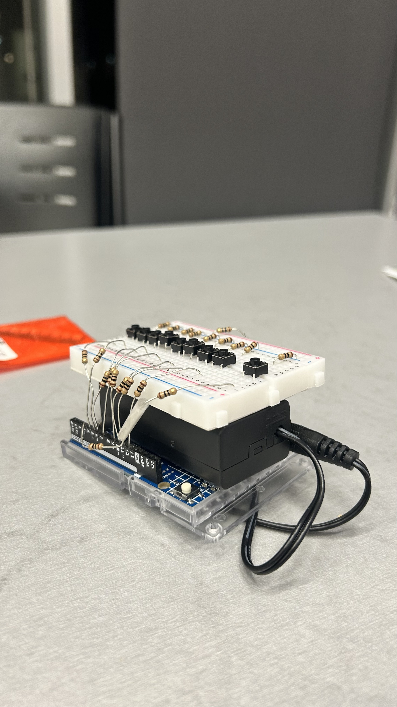
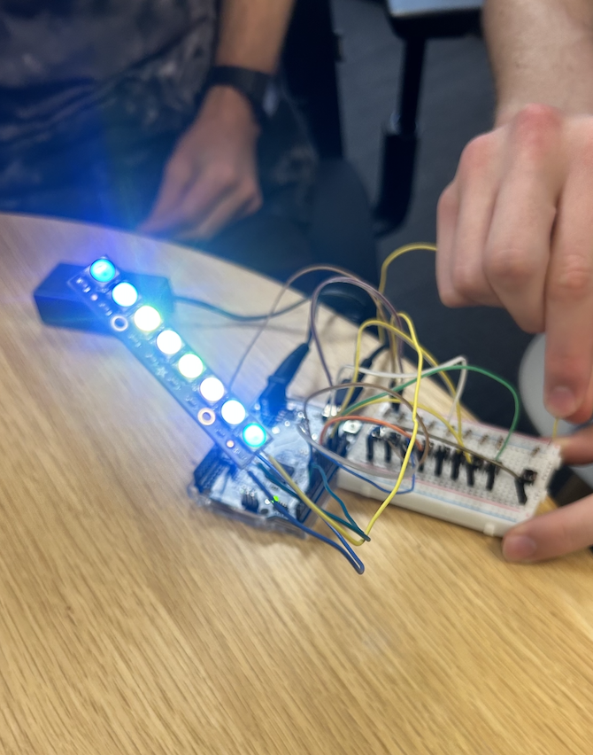
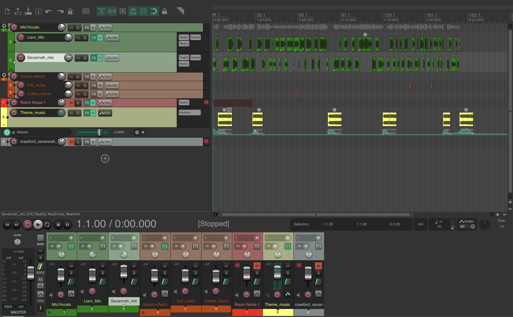

This project was my very first introduction to using InDesign last semester.
The goal was to create a magazine of any musical artist — I adore Hozier's
music, so I chose him as my subject.
Although I was proud of the outcome for this assignment, I am working on
transforming this typical PDF into an interactive piece — adding hidden music,
funny/factual pop-ups, and more. I hope to do this soon!



Timewasterz started in October 2025, when my friend Riley first coded the game in p5.js as a fun experiment. For our IDM final, we were challenged to create a physical product for a dystopian, futuristic society and we knew immediately we wanted to bring Timewasterz into the real world. Riley, myself, and another friend spent two months transforming it from a digital sketch into a fully tangible, hand-built game.
The game works by clicking a lit-up LED light. Once clicked, an animation plays and you have to react quickly to hit the blue light. Survive three levels and you win. To build it, we used an Arduino to power the LED lights and handle the button inputs, connecting everything through a breadboard and writing the logic in code. It was my very first time working with Arduino, and I completely fell in love with the process. There is something so satisfying about bridging the gap between code and something you can physically hold and interact with. I hope to keep incorporating hardware and Arduino into my future projects!
play the digital version ↗

This podcast was my second major assignment for my Audio Foundation course during my first semester of college. Throughout the course, we learned how to record and edit audio using Reaper, a software that was completely new to me at the time, having only used GarageBand to edit my own music before.
The assignment spanned two weeks, during which we had to write, record, and edit an original podcast that ran at least five minutes long. It was definitely a challenge because we were still finding our footing in the semester, but I had so much fun navigating Reaper and discovered a real love for the editing process. I took a lot away from this project and plan on using Reaper to record and produce my own music in the future!
Humbert is a poem I wrote after finishing Nabokov's Lolita. The story connected with me deeply on a personal level, and I found myself needing to pour everything onto the page. I sat down with my notebook and let it all out, and the result was this poem, which I hold very close to my heart.
This piece weaves together the narrative of Lolita itself and my own personal experience. It is written as a direct message to Humbert, the protagonist and narrator of the novel, and everything he represents. Writing this was a cathartic and emotional process, and sharing it here feels like an important step in owning that story.
This project first started in my Creative Coding class during my first semester of college. I was completely new to coding at the time, and it was a challenge to create visually interesting work without yet having a strong technical foundation. Despite that, I worked really hard to develop my skills and discovered a genuine passion for creative coding that has only grown since.
I originally completed this as a mini project, but ended up expanding it on my own by adding a mouseIsPressed function, which allows colors to be randomly generated and drag across the grid, staying locked into each square.
Since then, my web and coding skills have drastically improved. I am currently enrolled in two programming/web courses and am actively learning Python, HTML, CSS, and JavaScript.
click and drag on the grid to paint with color.